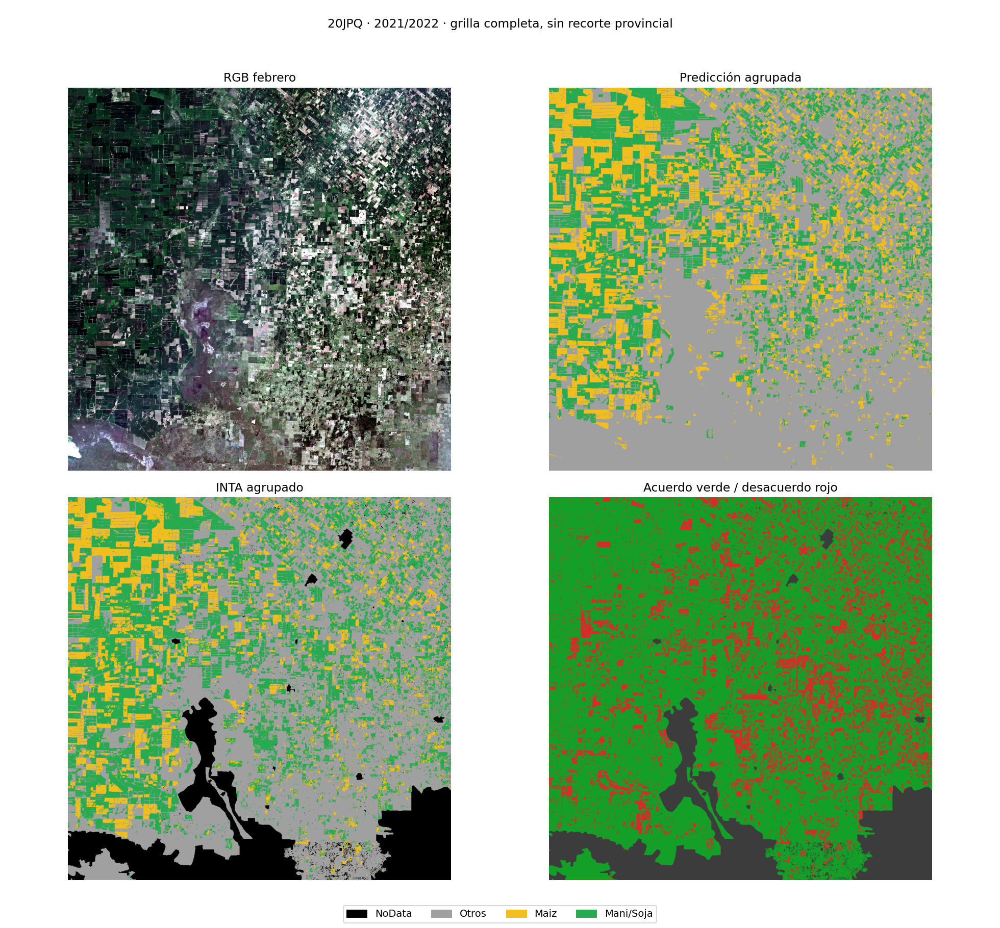
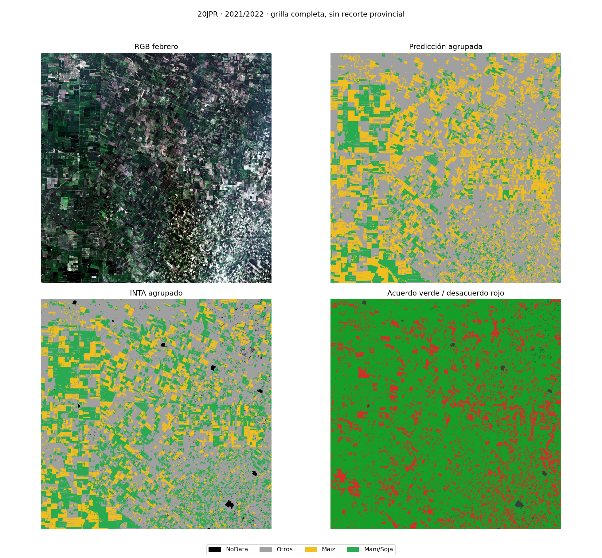
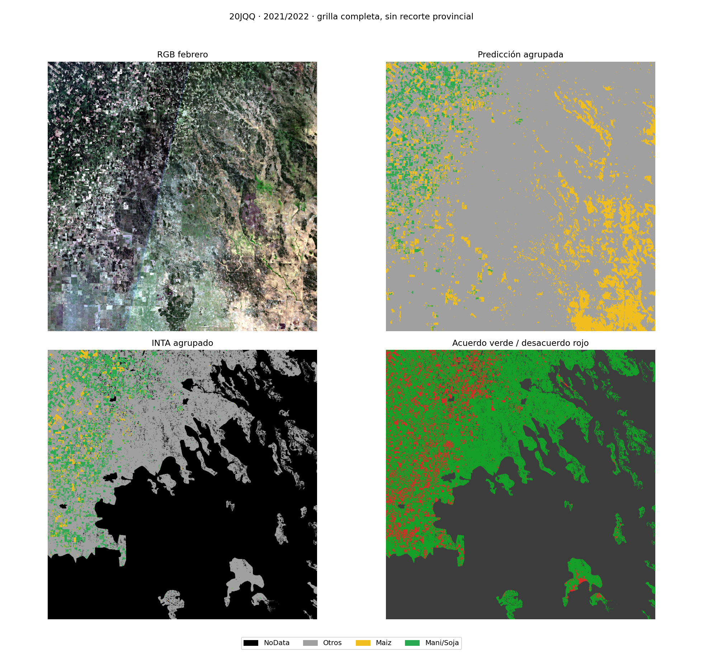
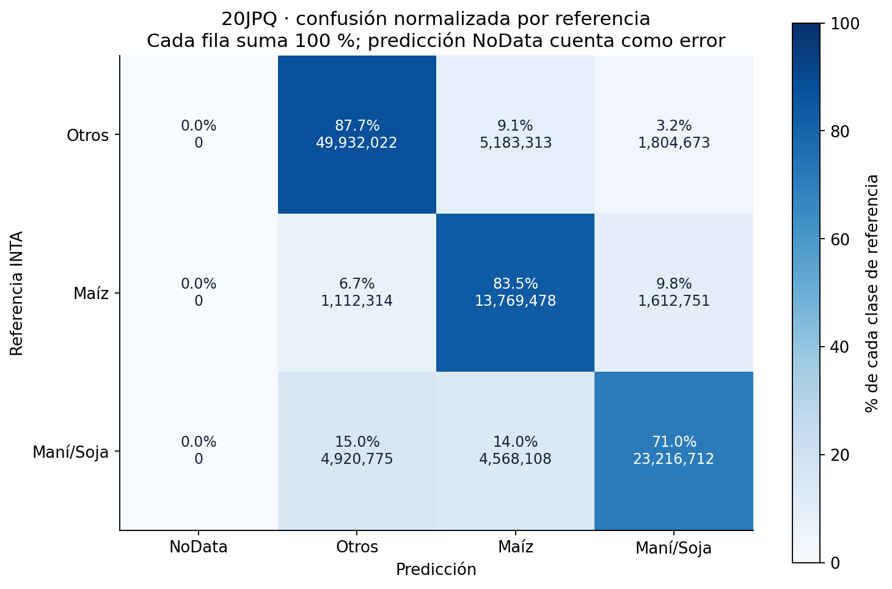
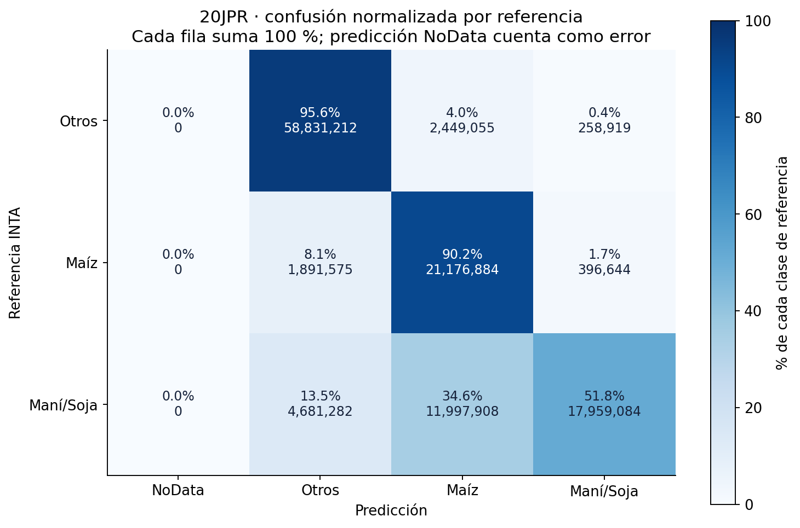
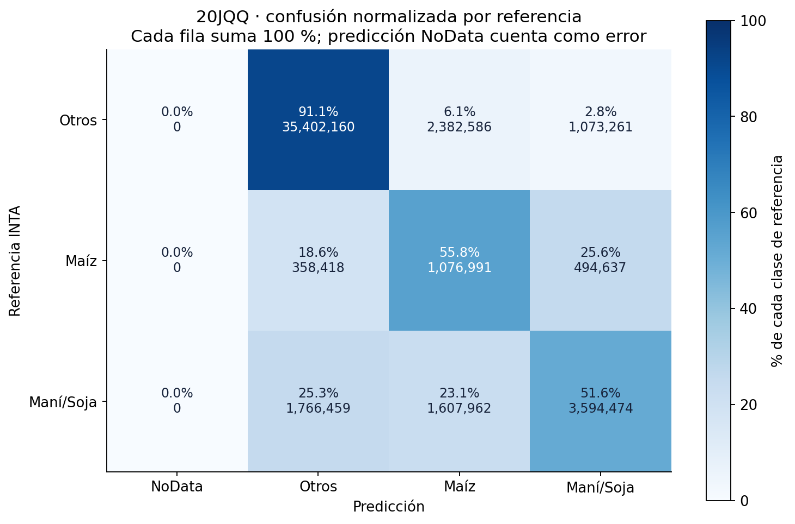
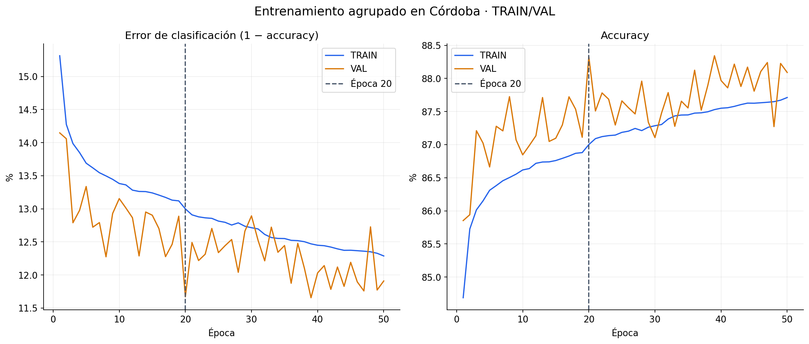
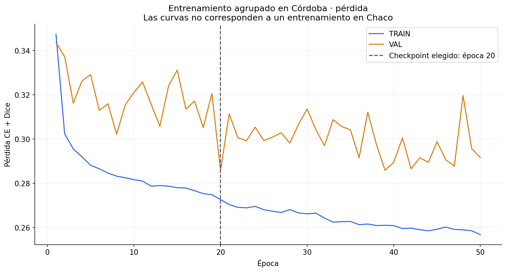
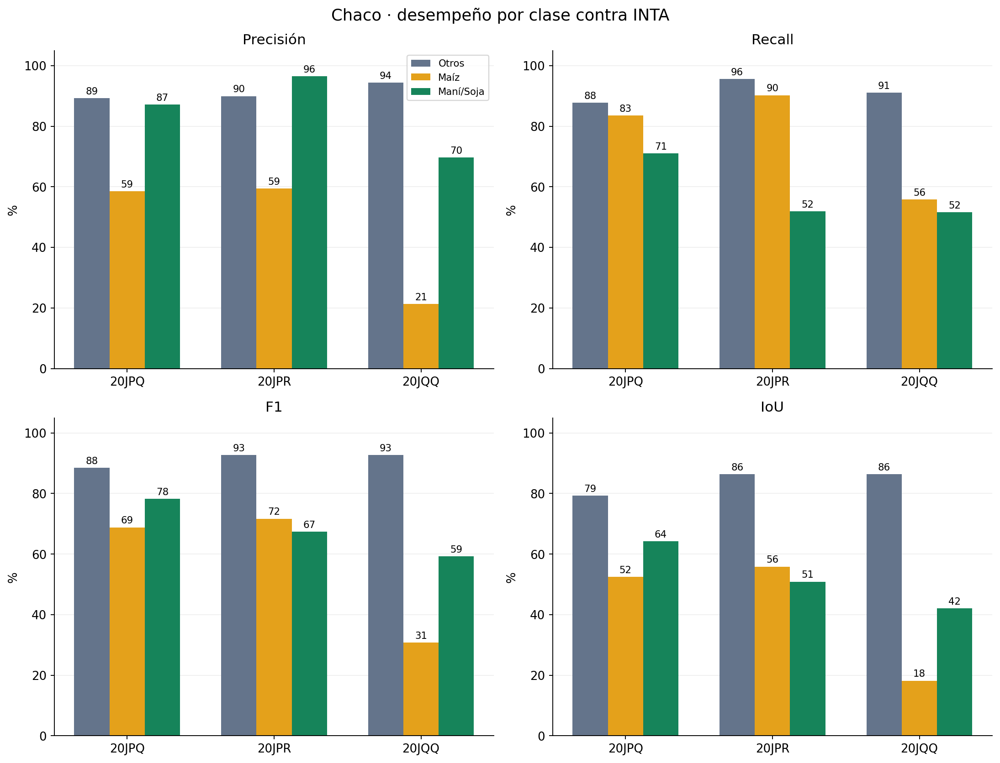
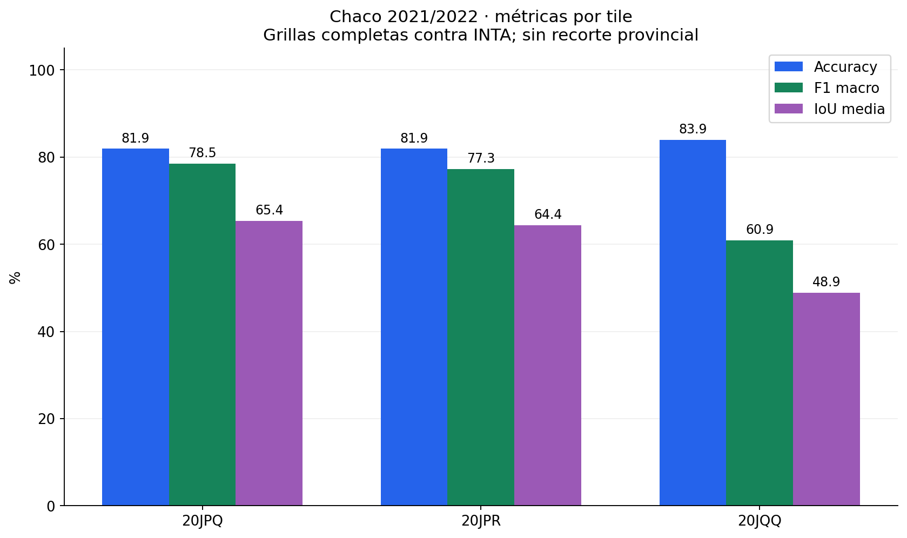

Métricas por tile contra INTA. Grillas completas, sin recorte provincial. Curvas del entrenamiento en Córdoba. Otros incluye otros cultivos y no agrícola.
Mapa de tiles de Córdoba y Chaco · Métricas JSON









